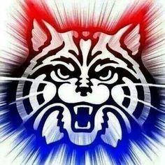

Welcome to Rine Heart Monitoring, our premiere blood oxygen saturation level and pulse instrument empire! We use a proprietary technology to get the most precise measurements in the business. We are a family company based on making sure that we protect our family, so you can protect yours. Come meet some of our team! Enjoy your experience. We use the Particle Argon Blood Sensor for users to calculate heart rate and blood oxygen(o2) saturation. Those who have the right aptitude are invited to join our coven.
Dr. Rusty Rinehart graduated from Harvard Summa Cum Laude in 1956 and begun to emmerge as the world's leading hematologist.
He began to catalog the world's blood, and in the midst of the Vietnam conflict, his knowledge in blood transfusions catapulted him to the world stage. He began research on cataloging the world's blood type in a registry.
In 1985, he joined the Nosferatu Coven with his new registry. His research shifted into advancing human potential with an advanced gene he found in his thesis research.
In 1990, he founded Rine Heart Monitoring company to engineer new devices to help create a better human. In 2015, Peter Thiel's mentee billionaire power duo of Chris Bremser and Ary Nath invested in Rinehart Heart Monitoring, and catapulting it to the top of the NASDAQ.
Contact: rustyrinehart@arizona.edu
Ary Nath immigrated here in 2000, and was able to get a prestigous scholarship to Stanford. There, he accelerated to the top of his class and eventually joined up with friend Chris Bremser.
Ary and Chris became an inseparable team. They invested early into Facebook in 2004. With that they were contacted by Peter Thiel to join his team. Under this new mentor, the team pushed themslves to the top of the
investment game. Within 1 year they were able to become multi-billionaires by investing heavily in the tech market. Ary is the strategist to the team. Some say it is Ary who targets the companies to take down and Chris is the fangs that does so.
This may have happened when they had bought a small tech firm "Etsy" to provide a platform for journeymen to sell their wares. Famously, it was Ary's idea to buy out any competitor, keep the ideas, keep the useful's, and terminate everybody else.
Contact: anath@arizona.edu
Chris Bremser went to Stanford on family money and had spent much of his life in halls with very wealthy people. He grew up making mult-million dollar deals, when his father demanded that he would go get a college degree.
Stanford business was an easy, yet boring endeavour for the young investor. This was true until he met Ary Nath. Ary was the only person who was smarter than him for years. Immediately, they became a power team. In 2004, the team invested early into Facebook.
It was a family contact that connected Chris and Ary with Peter Thiel. Peter Thiel loved the viciousness of the team. However, Peter Thiel underestimated the duo. Though it was Ary's idea, Chris manipulated Peter into losing 2 billion dollars in 2007.
This allowed the pair to weather the Great Recession. In 2015, the team invested in Dr. Rinehart's heart company to build a better tomorrow.
Contact: cwbremser@arizona.edu

In 1943, Cave Johnson created Aperture Fixtures, a shower curtain manufacturer. The precursor to Aperture Science, he selected the name because it 'makes the curtains sound more hygienic'. He became a billionaire after winning contracts to manufacture shower curtains for all branches of the U.S. Military except the Navy, winning the '1943 shower curtain salesman of the year' award. At the time of its creation, Aperture Science Innovations had developed the Aperture Science Portable Quantum Tunneling Device, a prototype to the modern Handheld Portal Device. As such, it seems that Aperture had already started to perfect portal technology, but was not ready to release it to the world, under the belief that much more could be done than just create portals. Of course, the technology was also impractical and bulky, and was delayed by Cave's wild innovations. During the 1970s, Aperture Science had become known as just 'Aperture', and the rise of Black Mesa and its success in bidding for contracts pushed Cave's temper to the limit. It is also implied that Black Mesa stole designs from Aperture and began to produce them commercially before Aperture could do so because Johnson refused to release the devices until they met his eccentric standard of perfection. It was around this time that Caroline became a bigger part of Cave's life as a secretary, and Cave became more desperate in his struggle to continue his work by offering $60 to potential test subjects, although only rarely were test subjects able to collect their reward due to the hazards involved.
Disclaimer:
Dr. Salehi, this entire website is a joke website. I, Chris, hope that this is obvious. Everything written on any of these is meant to be taken as a joke. The content of the HTML may be a joke, however, we have taken the project seriously. We have implemented everything on the rubric. No matter the differences between you and I, we as a group have enjoyed this class. We also recognize the difficulties thrust onto you by the Electrical and Computer Engineering Department. Thank you sir and Happy Holidays. -Ary, Chris, Rusty!
